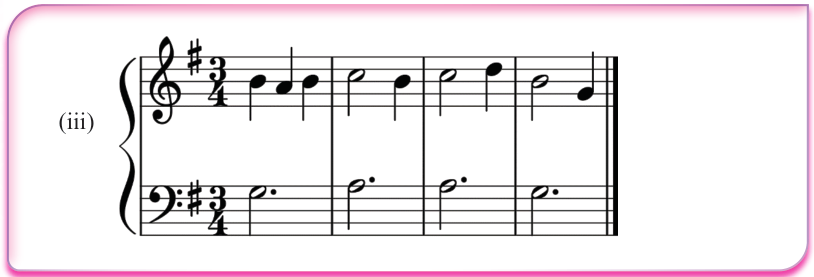

Playing triads on the piano
Triads can be grouped into primary and secondary ones. In this section, you will learn how to play primary triads on the piano in C, G and F major keys. In a scale, primary triads are built on the 1st (tonic), 4th and 5th degrees. For example, in the C major scale, the primary triads are built on notes C, F and G. In written music, a triad built on the 1st (tonic) note of the scale is labelled as I, on the 4th note as IV and on the 5th note as V. On the piano, primary triads are played using the 1st, 3rd and 5th fingers of the right hand and the 5th, 3rd and 1st fingers of the left hand.
Playing primary triads in C major scale
Since primary triads are built on the 1st (tonic), 4th and 5th degrees of a scale, in the C major scale, the primary triads will be C E G, F A C and G B D. Triad C E G also known as the tonic triad, is built on the 1st (tonic) note of the scale which is C, triad F A C is built on the 4th note of the scale which is F, while triad G B D is built on the 5th note which is G. Figures 6.9 to 6.11 show primary triads (I, IV and V) in C major on the piano.